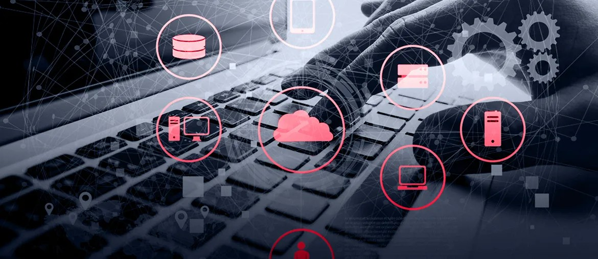

01
Map the handoffs
Map Amsterdam project data, portal events, and document handoffs to find where engineering, technical service, and customer teams lose time.
This brief shows how Elinext would steady the E-Cat Portal. It also covers engineering data and release work as Ketjen grows Digital Services across sites and teams.
We saw Ketjen hiring an Electrical and Instrumentation Engineer for Amsterdam, with room to grow into project management. That usually means standards, documents, and plant change are moving now.
Business transformation now touches plant change, digital services, and customer-facing portal work.
The hire tells us Ketjen is adding plant and project work. Your site also shows Digital Services, modeling, and the E-Cat Portal. That means business transformation touches engineers, technical service, and customer data at once. When those flows drift apart, teams wait on documents or old signals. The portal then feels slower than the promise around it. That slows decisions and weakens operational reliability.
We would use a dedicated squad under your transformation lead. The first goal is one safer, faster flow from engineering change to portal value.
Map Amsterdam project data, portal events, and document handoffs to find where engineering, technical service, and customer teams lose time.
Set one release plan for portal fixes, dashboard rules, and access flows, with QA gates and weekly demos for each change.
Ship a pilot on one high-value path, such as ECat analysis access, trend review, or project document tracking.
Add monitoring, test automation, and simple service reports so Ketjen can move faster without losing operational reliability.

Elinext helped modernize a legacy MES and support round-the-clock integration work. The system later reached ROI up to 400%.
View case study
Elinext built a data platform that processes about 30 million records daily. It gave the manufacturer clearer dealer and market insight.
View case study